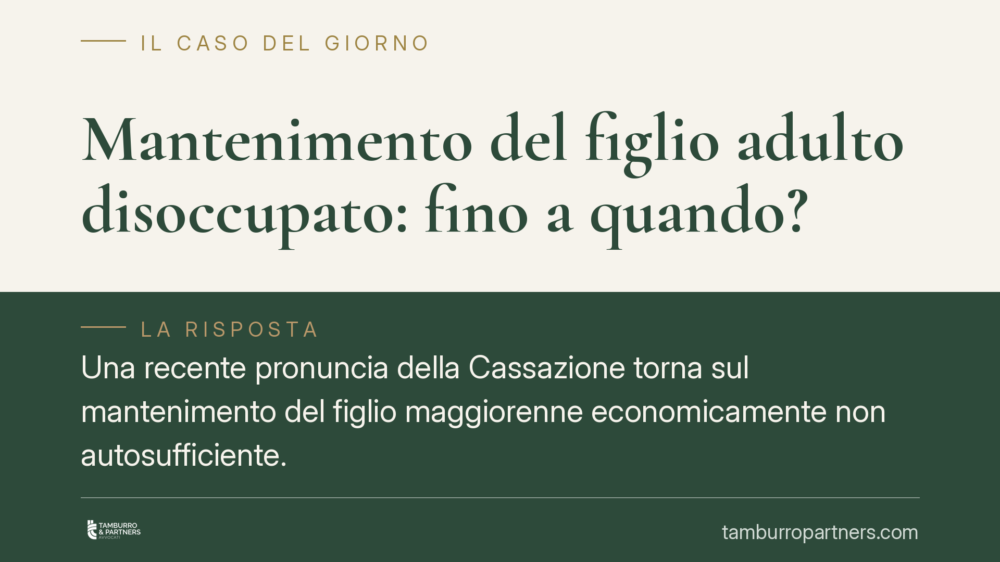

Mantenimento del figlio adulto disoccupato: fino a quando?
Una recente pronuncia della Cassazione torna sul mantenimento del figlio maggiorenne economicamente non autosufficiente. Superata una certa età, il genitore non è tenuto a un sostegno indefinito: spetta al figlio dimostrare un impegno concreto nella ricerca di lavoro. Senza quella prova, l'obbligo può ridursi ai soli alimenti. Una questione che tocca molte famiglie dopo la separazione.

Il caso
Una figlia di trentacinque anni, disoccupata, continuava a ricevere il mantenimento dal padre separato. La Corte di Cassazione ha ritenuto che, raggiunta un'età in cui l'autonomia economica dovrebbe essere ormai conseguita, il genitore non è più tenuto a un sostegno pieno e tendenzialmente illimitato: al massimo restano dovuti gli alimenti, e solo in presenza dei relativi presupposti.
Nota di verifica. Il riferimento alla specifica ordinanza citata dalla fonte (indicata come n. 17783/2026) va trattato con cautela: numero e anno sono da confermare presso i repertori ufficiali prima di qualunque uso in sede difensiva, trattandosi di dato non verificabile in modo autonomo. Il principio di diritto illustrato, tuttavia, è coerente con l'orientamento ormai consolidato della Cassazione in materia.
Inquadramento normativo
Occorre distinguere i piani. L'obbligo di mantenimento verso i figli minori ha base negli artt. 147 e 315-bis c.c., che impongono ai genitori di mantenere, istruire ed educare la prole secondo le sue capacità e aspirazioni.
Per i figli maggiorenni non ancora autosufficienti il fondamento è diverso. Nel contesto della separazione e del divorzio opera l'art. 337-septies c.c., che consente al giudice di disporre un assegno a favore del figlio maggiorenne non indipendente economicamente. Il resto è frutto dell'elaborazione giurisprudenziale: la Cassazione ha chiarito che questo obbligo non è perpetuo e si attenua progressivamente con l'età del figlio.
Il mantenimento e gli alimenti sono istituti distinti. Il mantenimento assicura un tenore di vita parametrato alle condizioni della famiglia; gli alimenti (artt. 433 e seguenti c.c.) coprono soltanto quanto necessario a vivere, in presenza di un reale stato di bisogno di chi li chiede. Il passaggio dall'uno agli altri non è un dettaglio: cambia radicalmente l'ampiezza della tutela.
L'inversione dell'onere della prova
Il punto centrale è chi deve provare cosa. Secondo l'orientamento consolidato della Cassazione sul figlio maggiorenne economicamente non autosufficiente, con l'avanzare dell'età l'onere della prova si sposta sul figlio: non basta affermare di essere disoccupato, occorre dimostrare di essersi attivamente adoperato per inserirsi nel mondo del lavoro.
Il meccanismo è questo. Finché il figlio è giovane e in formazione, si presume che il percorso verso l'autonomia sia ancora fisiologicamente in corso. Superata una soglia di età ragionevole, la presunzione si capovolge: si assume che l'autonomia dovesse essere già raggiunta, e tocca al figlio superare questa presunzione provando le circostanze che gliel'hanno impedita senza sua colpa.
Nella valutazione il giudice considera parametri concreti: le condizioni del mercato del lavoro nel territorio di riferimento, la coerenza tra le opportunità disponibili e il titolo di studio o la formazione acquisiti, l'eventuale rifiuto di offerte di lavoro congrue rispetto alla qualificazione del figlio. Chi rifiuta senza giustificazione occasioni adeguate non può pretendere che l'inerzia gravi sul genitore. Allo stesso modo, la prolungata inattività non supportata da un impegno documentato depone a sfavore di chi chiede il sostegno.
Cosa cambia per genitore e figlio
Per il genitore separato la decisione conferma che il mantenimento non è un vincolo a tempo indeterminato. Resta però un presidio importante: non è ammesso interrompere i versamenti di propria iniziativa. La riduzione o la cessazione passano da una decisione del giudice, su apposita domanda di modifica delle condizioni.
Per il figlio adulto, l'autosufficienza non va soltanto allegata: va costruita e documentata. L'assenza di prova dell'impegno può tradursi nella perdita del mantenimento e nella riduzione del sostegno ai soli alimenti, subordinati peraltro a un effettivo stato di bisogno.
Cosa fare in concreto
- Genitore: non sospendere mai unilateralmente i versamenti; proponi un'istanza di modifica delle condizioni se ritieni mutati i presupposti.
- Genitore: raccogli elementi oggettivi sull'età, la formazione e la situazione del figlio, utili a sostenere la domanda.
- Figlio: conserva prova documentale di candidature, colloqui, iscrizioni a centri per l'impiego, corsi e tirocini.
- Figlio: valuta con attenzione le offerte ricevute, evitando rifiuti di proposte congrue rispetto al tuo titolo.
- Entrambi: verificate le norme applicabili al vostro caso, che cambiano a seconda che i genitori siano o meno separati.
Conclusione
La direzione della giurisprudenza è chiara: il mantenimento del figlio adulto si misura sull'impegno reale verso l'autonomia, non sulla sola condizione di disoccupato. Il dato anagrafico incide, ma ciò che pesa è la prova dell'attivarsi concreto.
Contributo informativo a cura di Tamburro & Partners Avvocati - Avv. Giuseppe Tamburro. Non costituisce parere legale.
Ogni famiglia ha il suo equilibrio.
Separazione, divorzio, affidamento, assegno: se vuoi un confronto riservato su una specifica situazione, scrivi allo studio. Ti rispondiamo entro un giorno lavorativo.